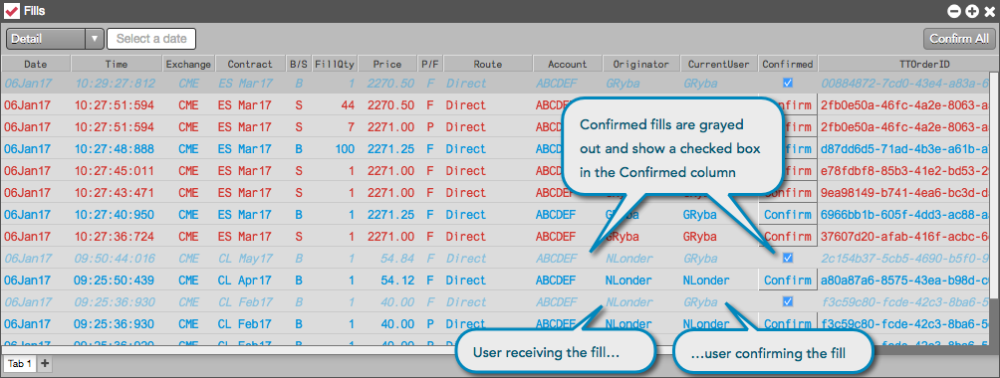
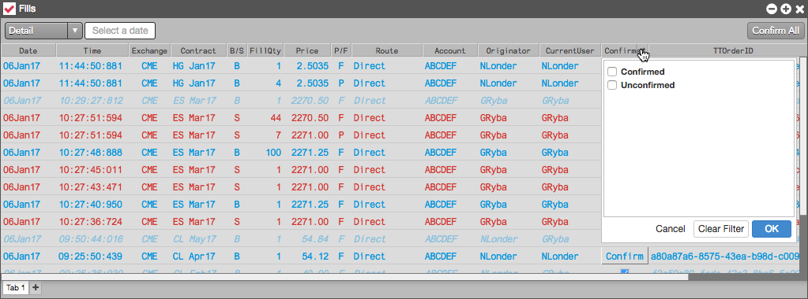

Brokers or users who share an account can indicate to one another which trades/confirmations have been reported to a client by confirming fills in the Fills widget. Full and partial fills can be confirmed in either Detail, Continuous, or By Order mode. Synthetic parent order fills cannot be confirmed, but you can confirm the child order fills. Once a fill is confirmed, it cannot be unconfirmed.
When a user confirms a fill, the following is displayed in the Fills widget:

Optionally, you can show the Confirmed column in the Fills widget, which includes the button for confirming fills. To show this column, right-click in the Fills widget and select Settings... | Set Fills Columns.
You can configure the Fills widget to display only confirmed or unconfirmed fills by filtering the Confirmed column. To filter this column, right-click the column header and check the checkbox next to the Confirmed or Unconfirmed option to enable it.
